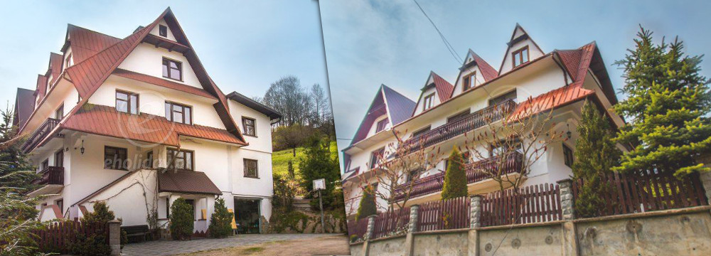
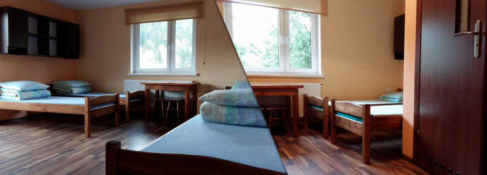
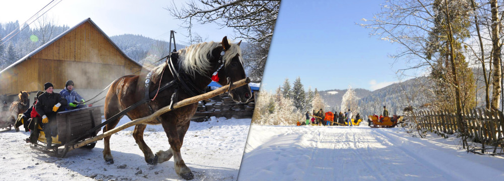
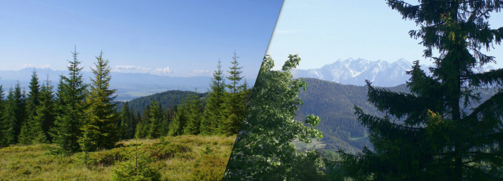

Dom położony jest na uboczu malowniczej miejscowości,
w ofercie dla gości pokoje 2, 3 oraz 4 osobowe, stołówka
z możliwością całodniowego wyżywienia w atrakcyjnych cenach oraz sala ze stołem do ping-ponga, boisko do siatkówki i mini basketu.
Obok obiektu bezpieczny parking.
Idealne miejsce dla grup, kolonii oraz na wczasy rodzinne.
Zarówno zimą jak i latem Ochotnica czeka na turystów.

Pokoje gościnne w oazie ciszy
i spokoju
Odpręż się i zrelaksuj
Najwyższa pora, aby zacząć planować rodzinną majówkę,
lub wypad w góry ze znajomymi. Ochotnica i jej nowe wieże widokowe
połączone kilometrami ścieżek rowerowych to miejsce wręcz
wymarzone do wypoczynku.
Cisza, piękno przyrody,
smaczne domowe posiłki - czego chcieć więcej?
Zapraszamy do zapoznania sie z atrakcjami turystycznymi Ochotnicy:
Ochotnica - enklawa aktywnego wypoczynku
- Do dyspozycji gości:
- Kuchnia ogólnodostępna
- Miejsce na ognisko
- Wypożyczalnia sprzętu rekreacyjnego
- Boisko do gry
- Sala telewizyjna / gier / świetlica
- Wypożyczalnia sprzętu wodnego
- Grill, Sala kominkowa
- Udogodnienia:
- Możliwość zlecenia prania
- Możliwość zlecenia prasowania
- Pralka ogólnodostępna
- Deska do prasowania / żelazko ogólnodostępne
- Akceputjemy zwierzaki
- Atrakcje dla dzieci:
-
Plac zabaw dla dzieci
(Piaskownica, Huśtawka, Trampolina) - Sala zabaw dla dzieci
-
Plac zabaw dla dzieci
- Dla biznesu:
- Kącik biznesowy (internet ksero/fax)
- Internet (wifi)
- Opcje wyżywienia
- Śniadanie
- Obiad
- Kolacja
- Obiadokolacja
- Podwieczorek